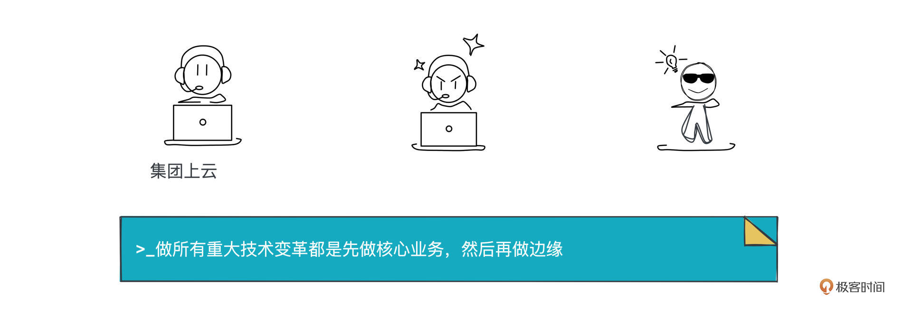
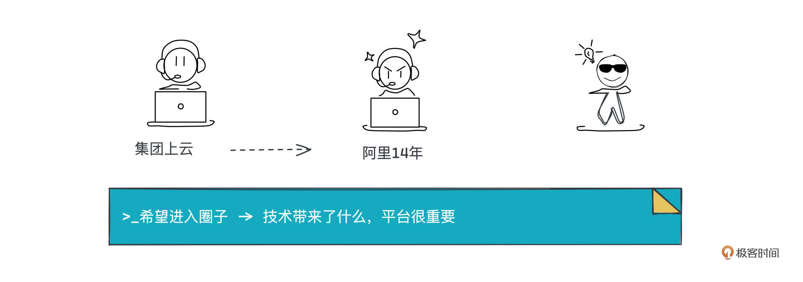
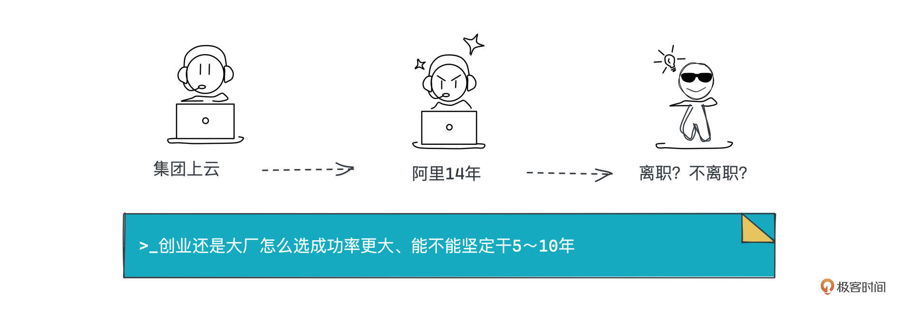

- 01 小厂项目：做程序员不难，难的是做职业程序员.md.html
- 02 小厂创业：做出一个产品，卖给所有人.md.html
- 03 淘宝HSF：能让淘宝出重大故障的就那批人.md.html
- 04 淘宝消防队：真正最优秀的程序员不应该是英雄.md.html
- 05 HBase_T4：Leader最重要的，说白了是要赌未来.md.html
- 06 异地多活：技术圈子的人，见过猪跑很重要.md.html
- 07 运维团队：我能干，只是我不想干而已.md.html
- 08 基础团队：研发效能部门，解决不了研发效能问题.md.html
- 09 统一调度：只是问题非常多而已，摔出来就行了.md.html
- 10 出走大厂：离职？还是不离职？这是一个问题.md.html
- 11 CEO心得：大厂出来创业，最大问题是对钱没概念.md.html
- 团队：在人身上，你到底愿意花多大精力？.md.html
- 开篇词 这一次，我们来采访毕玄.md.html
- 成事：技术人最大的问题就是情怀化.md.html
- 文化：你所在的团队，有多少人敢讲真话？.md.html
- 方向：技术演进，到底该怎么思考未来？.md.html
- 架构：架构师只是个角色，不是个岗位.md.html
- 番外：一位险些没上得了大学的青年，如何开启计算机征程.md.html
- 捐赠
10 出走大厂：离职？还是不离职？这是一个问题
你好，我是叶芊。- - 统一调度做完，时间来到了2018年。当时有这样一份报道：“2018 年的 12 月，CTO 行癫调任阿里云总裁，宣布阿里全面上云，组建了以毕玄为上云总架构师的架构组，确定了上云的方案和步骤。”- - 从外部视角看，我们很容易推测好像毕玄又被委以重任了，但在当时他却有了离职的想法，那之后一年多就走了，当时到底发生了什么？- - 我们继续对谈，聊一聊他离职的故事，以及对自己阿里14年的总结。
- 极客时间：看你的经历，统一调度做完，你就去做集团上云的项目了？
毕玄：当时18年年底有个组织调整，行癫宣布上云，让我兼集团上云的架构师，但我也没有做太多，集团上云说实话早就奠定了基础，我只是定调的，就什么叫集团上云。
腾讯那篇文章很像我们当时上云，把里面的公司名改一下就是阿里，一模一样，说明两家公司对上云这个事情，内部争论都是存在的。因为什么是上云？行癫是不会说的这么清楚，行癫只会说你们2年搞定，我对外说完了，剩下你们做不做得到，那就是你们的事了。
但没有人知道做到什么程度叫做上云，有100种方式解读，可以解读得很简单，也可以解读得非常难，我当时还是定了一个比较有挑战的目标。
极客时间：上云会分业务吗？
毕玄：不分业务，肯定是先上核心。阿里后来做所有重大技术变革都是先做核心业务，然后再做边缘。
极客时间：但一般不是会用边缘业务先试吗？
毕玄：我知道，但你先做边缘并不代表任何东西，因为核心不会觉得你上了边缘就解决了它的问题，它还是没有信心，但是如果你先上了核心业务，边缘会认为我也没问题，后面工程收尾就变得非常简单。这是阿里后来的调整，最早我们也是先做边缘，但发现那样工程周期更长，而且很难，但一上来就搞核心，后面其实很简单。

极客时间：后来你有段时间去带视频云团队了，那是怎么回事？你之前好像完全没有视频方向的经历。
毕玄：上云做完19年的时候我准备离开，其实18年我就想走了，因为一些汇报线上的问题，但公司各种谈，反正折腾了很久，19年年底刚好疫情，过年的时候行癫说要么你去带视频，他还是比较懂我的，知道我想做的是偏基础技术的东西，加上离职也离得不是很顺利，我就去了，一直带到21年8月离职。
我是一方面希望在技术上拓展一点，另外视频是阿里云一条不算小的产品线，在商业上更有要求，所以我觉得也挺好，可以去看看偏商业的业务是什么情况。可能我运气也相对好一点，2021年刚好是音视频在云赛道最火的一年，声网、Zoom都到天上了，声网市值100多亿美金，Zoom 1000多亿美金。
极客时间：那在视频云团队，你负责的什么？
毕玄：当时技术我几乎是不管的，我带产品、销售和运营，全是业务团队，拜访了很多外面的各种客户。现在想想也不是坏事，算是一个积累，我对商业有了更多感受。
我发现商业是完全不一样的。商业不是说你做得多好就一定会成功，可能要看很多业务策略的东西，但业务策略就跟技术完全不一样，更模糊。技术，你觉得这个方向可以，解决技术问题就好，但业务，你觉得这个方向可以，有很多内外部因素会影响，很多问题也不一定能解决。
- 极客时间：如果总结一下自己在阿里的14年，你觉得最骄傲的事是什么？
毕玄：还是那三个，从来没有变化，HSF、异地多活和阿里的统一资源调度。
极客时间：最遗憾的事呢？
毕玄：没啥遗憾，挺好的，阿里这一段我是真正在搞技术，专业性、深度、广度都得到了很好的提升，而且我们这拨人也跟着得到了很好的回报，这也很重要。
但说实话这就是幸运，我们这波做基础技术的人，从2007年到2021年，刚好是阿里最高速发展的一段时间，业务高速发展就带来了很多技术上的问题，总要有人去解，所以阿里给了很多人机会。
因为换一波人其实也一样能做好，工程师最擅长解决问题，在阿里，问题已经展现出来了，你只要去解决就可以，这对大多数工程师来讲都不是难题。如果你不在或者在另一类的公司就不可能，不是说你有没有能力的问题，没有平台，你有能力也没用。当然现在有点变化，因为中国技术创业的环境好了很多，以前是一点机会都没有，现在应该有那么一点。
极客时间：像之前讲的淘宝消防队，在外面很难知道问题是什么，但是你在平台里，问题就在那等你解决？
毕玄：技术人就是这样，你平台不够大，碰到的问题就不是世界级，可能别人早就碰到并且已经解决掉了，那你就不可能做很创新性的，最多结合公司的情况，做一个很好的工程落地，但你不可能引领。
但大平台就不一样，你更有机会做出一个世界级的引领性解决方案，这对程序员，尤其做基础技术的人很重要，如果你想很好地发展，是很难离开大平台的。业务技术可能不大一样。
比如说阿里，我很多好朋友更早就走了，他们当时都问我为什么还不走？我就说，在阿里这个平台上能看到的问题，其它公司都很难看到，关键是在阿里，我又有机会去做，等我做完了，如果我看不到还有什么问题觉得很难了，那再说。
极客时间：看你当年的微博说除非去Google，不然你是不会跳槽的？
毕玄：因为Google确实很让人羡慕，它看到的一定比我们更远，到现在我都很相信。
极客时间：有人说你是“技术大牛”“毕大师”，这样的标签你怎么看？像“毕玄”这个花名本身也是一个标签，还是说你其实不在意这些？
毕玄：所以我没换花名。
极客时间：你对这些标签的感觉会有变化吗？
毕玄：会有，我很多年前比较在乎。
极客时间：比较在乎，是什么时候？
毕玄：05、06年吧，进阿里之前。当时去参加小规模的技术讨论会，以前BEA经常搞User Group那种，我们这些小技术同学就去参加，觉得哇上面的人简直太偶像了，那个时候我们的梦想就是能不能认识这些人一起聊个天，以后能不能自己去讲。
那个时候是很在乎的，最重要的就是希望能进入那个圈子。但我可能后来写了OSGi那篇文章，在那个圈子里，就觉得没什么了。
再后来，我觉得技术最重要的是带来了什么。很多人会说自己技术好，那你到底用什么来证明呢？我觉得最好的证明肯定是，你做的东西对这家公司的整个业务发展有所作用。当然技术人可能还会追求别的，比如方案具备引领性，推动了这个技术领域的发展，那就更好了。
像阿里，尽管我们是09年做的分布式改造，但即使到今天，做的思路至少影响了中国大部分互联网公司，后面做的异地多活、统一调度也在逐渐影响。
极客时间：你们当年有觉得自己做的东西影响很大吗？
毕玄：我们觉得这些外面都用不到。就像分布式，我们觉得大部分公司不需要分布式，但现在我们认可AWS讲的，现在的软件跟当年的差别很大，所以分布式成为很多公司的选择。
做异地多活，我们更认为这玩意儿除了阿里、腾讯这种超级大的公司有诉求，中国其它公司应该都不算强烈，但这两年越来越多的公司开始去做这个方向，甚至国家比较重要业务的企事业单位都开始做。调度也一样，就很奇怪，Google其实做了很多年，中国也没有几家去跟进，但阿里做完，明显有好几家头部公司都在做了。
对技术人员来讲，这种就很有成就感，因为别人讲到的时候都会提及，你看阿里是怎么做的，这就像我们说Google是怎么做的，就是信心，这很重要。
极客时间：他们就不用再证明。
毕玄：对，而且周期肯定会缩短，人才池也会扩大。当年我们做分布式碰到很多问题，但现在中国能做分布式架构的人简直太多，之前能做异地多活的人也少，但慢慢也能看到各家做过的人变多，调度以后也会是这样。

极客时间：当时你几次提离职，这么坚定，是想好自己之后要干什么了吗？
毕玄：没有，但出来创业是确定的，创业干什么一点都不确定。所以我们现在也建议还是先想好你们到底要干什么，再出来，别冲动。因为创业跟在大公司差别非常大，我离职的时候跟很多人聊，总结出来就三个选择。
第一，继续去一家大公司。找一家公司，任一个更高级别的位置，理论上也能做更大的事情，但后来我想了想觉得没有太大意思。现在没有多少平台让我觉得面临的问题多不一样，可能更多就是把我以前做过的去那边重新落地。
而且所有大公司我相信不管是多高级别，你做事都会面临很多组织协作层面的问题，很多约束没法避免，因为大公司分工特别细，你要面对的横向部门会非常多，即使CEO也受很多限制，我想不出来什么职位不是，这很正常。所以我觉得大公司还是不考虑了。
第二个去一家中等的在上升期的公司，可以去任职CTO跟随上市。很多人会选这个，我以前有个朋友梦想就是离开阿里以后去美国敲钟，所以他就选了一家即将上市的公司去任职高管。不管怎么样，梦想肯定实现了，那也可以的，我觉得挺好。
但这个对我来讲，也没有太大意思，敲完钟然后呢？我就该走了吗？就没有太大的吸引力。所以只剩一个选择了——创业。还有退休，我觉得现在退休有点早，还是得再干几年。
极客时间：还是想做点什么。
毕玄：我们一帮技术人员，很多出来就一个原因，想找个机会做能再吹一把的事情，要的就是成就感。那成就感怎么来？就是前面讲的第一在公司有贡献，第二做的东西在业界有影响力，最好它还能被很多人用。
我以前跟有些做管理的说，对成就感、对一个人是不是成功的判断，技术人员跟很多非技术的人，尤其高层的管理者，是不一样的，说得更极致一点，世界观是不一样的。
对我们技术人来讲，只在乎你过往做了什么，你做了一个东西还能被很多人用，就是最牛的。像Trustin Lee做了Netty，更不用说Jeff Dean这种写了很多东西，还有写各种语言、框架的，我们不会在乎他在哪家公司任职，什么级别，带多少人，根本不Care好吗。
极客时间：之前不是有个段子Python之父简历上只有一行字，I wrote Python。
毕玄：对，最看重的是作品，但我们后来也发现，不仅技术是这样，事实上所有的都这样（笑）。
你说即使是娱乐圈，大家也看你拍了什么电视电影，唱了什么歌，越多的肯定就越大牛，像周杰伦这种一长串的就是巨牛。其实都一样，等你老了，回顾人生的时候，没有人会记得你在哪家公司任职了高管，一点都不重要。淘宝总裁有多少任，没有人记得，你说你做过淘宝总裁，但大家都忘了你做过，这才是最悲剧的。
好几个阿里出来的都是这个梦想，只是觉得在阿里确实有点难。想想自己大概还能工作多少年，阿里前面的事好像还挺值得吹下牛的，但我们发现如果再这样下去，就没什么可以吹的了，这就不大对劲了。
极客时间：不太对劲？是指一直当管理的状态吗？
毕玄：我们不希望到老了回顾人生的时候，发现全是更早的，中间有10年没有任何东西，那大家肯定会说你那10年都在混。因为我们这种人退休了八成都会做点咨询，做咨询肯定不希望自己谈的都是十几年前的案例，至少能稍微近一点，否则有点难。
极客时间：离职后，创业是确定的，那当时你有想过内部创业吗？
毕玄：如果你有机会在阿里做，确实没必要离开，何必呢？像玉伯做语雀挺好，你既然还在做一件足以吹一辈子的事情，那就继续干着，有人给钱，什么都不用你管，多好。因为想做一件大事，无非是找人、拿资源，在内部你去找上级、总裁要足够的支持，这就是一种资源。
但是，我要做的事情不光要资源，还要横向部门的各种支持，比如要销售线、市场，这就很难，总裁也很难，因为他很难偏向你。
以前我们想过，出来以后最大的损失是品牌，我们将失去阿里这个巨大的招牌，这是最值钱的，这确实是个非常大的伤害，但要资源也变得简单了，因为我只是找投资机构要钱，剩下所有都是自己决定。
极客时间：这个硬币两面你们是可以接受的。
毕玄：我出来创业前，很多阿里高管跟我说，创业也没你想得那么自由，最后你还会受限于股东、董事会等等。但必须说至少在前几年，你并不会受制于他们，自己有绝对话语权。
极客时间：一个创业公司，前几年的规模，可能也没有到别人想要插手。
毕玄：对，人家根本就不会插手，就你这，他还怕插手一下万一挂了。所以你考虑好两个问题就行。
一你想做的事，到底是在阿里做成的概率更大？还是你出来做成的概率更大？如果出来的概率更大，那就别纠结了，你要想好你会失去什么，阿里的品牌，对很多人来讲还有阿里的待遇。
二你能不能在这件事情上坚定地干个比如5-10年，在阿里说实话你要做一件事情5-10年很难，你可能自己想，但有一天你就被组织调了。
极客时间：所以当时想清楚之后，你还是决定出来为自己的技术梦想奋斗一下。
毕玄：但说实话我出来创业以后才发现，这个命题成不成立还要再想一下（笑）。
因为创业还是一个非常商业的事情。技术梦想当然可以有，没有问题，我也很羡慕用技术梦想创业的人，我也想过，能不能做个东西让很多开发者用，如果能做出来就很成功了，至于这玩意儿到底能赚多少钱都不重要。
但后来我觉得这有点不靠谱，因为你创办了一家公司，任何公司都是商业公司，想发展好，基础是这家公司能赚钱，这个当然很现实，技术的人都不太喜欢听。
极客时间：成本、收益？
毕玄：技术人不愿意听这个，很多阿里出来创业的就非常技术梦想型，我想做这个事情，对世界产生一些影响，至于赚多少钱我都不Care。
但这种准确来讲，你不算创业，你只是换了个地方干活，然后你还需要上面有个人给你创造出一个空间来，这跟你在大厂的区别不是很大，可能还更难一点，因为你得在外面找个人盖住你，这个难度更大。
创业最大问题就是这个，你必须考虑能不能创办一家未来具备持续盈利能力的公司，如果不具备，梦想就不可能实现，因为你做到一定阶段，公司倒闭了，那也没了。所以我们就一直在想到底能干什么。

极客时间：那想创业方向这事，你们想了多久？
毕玄：很快的，我们出来以后，一两个月就基本确定要做什么了，无非就是几个方向想可能性。
极客时间：你的思路是什么样的，可以具体讲讲吗？
毕玄：像我们这样第一次创业的人，八成只能做自己擅长的，其他的概率非常低。
比如我们看小鹏、雷军，你说后来雷军做手机，他难道懂手机吗？他肯定不懂，但是因为前面他成功经营了金山，小鹏也是，做汽车之前创办了UC。
极客时间：第二次创业的时候有之前的创业经历做担保？
毕玄：因为已经有足够的人脉圈和钱了，最重要的是钱，持续找钱的能力非常强，投资人就根本不在乎现在做的事他擅不擅长，你很靠谱，给你砸再多钱都行，赛道最好越大越好。
现在我们说好后悔，如果你真的想做一家对世界影响非常大的公司，说实话，最好不要在大厂待太久，因为连续创业才有成功的可能。我不太相信一个人创办第一家公司就超级大，王兴之前折腾了好多家，黄峥也一样折腾了好多家，张一鸣也是，对不对？马云之前也创办了好多次。马化腾比较特殊，就创办了一家，运气比较好。
极客时间：你说的，想创业大厂不能呆太久，是为什么？
毕玄：在大公司，你最大的优势是带领过大团队，见过大平台大世面，所以你的公司如果未来能成长成一家很大的公司，大家相信你能带领好。但关键是你现在创业，能不能走到那步其实是更大的挑战。
极客时间：你如果重来一遍的话，觉得自己什么时候出来更好？
毕玄：也许上市后就可以走了（笑）。因为创业最好不要有太大经济压力，不然很容易变形，把公司做成目标就只有赚钱，这样会容易失去选择权。创办公司当然要赚钱，但选择还是需要的，比如说短期有些钱，如果对公司业务发展没什么意义，就不要赚好了，没有什么，亏损就亏损，你是能接受的。
但你想，如果创业者压力那么大，公司很容易出问题，他如果真的很缺钱，比如连生活都有问题，我觉得会不择一切手段。所以我也很佩服以前创业的一帮人，压上所有身家，哇简直太牛了。
极客时间：现在大家已经习惯了创业要找融资。
毕玄：都有退路，以前都是All in。
极客时间：中国的投资环境也在成熟，但刚刚讲到第一次创业，国外成功的好像多一点。
毕玄：国外也比较特殊，很神奇，你看微软，盖茨之前没干过啥，Facebook，马克也没干过啥，上来一把成功，Google也是。
我觉得是因为国外卷得没有中国厉害，他们如果面对一些成熟的创业者，我觉得也干不过。但中国，你如果真的想做对社会影响非常大的赛道，除非以前就是这个赛道的人，那很幸运，就像很多做芯片，做机器人的，他以前背景就是这个，像我们这种就没办法。
To be continued……
水友讨论区
对谈到这里就暂时结束了。今天的重点话题是毕玄对自己在阿里14年工作生涯的反思。
对于工作中的成就，他说“说实话这就是幸运，因为换一波人也一样能做好。”聊到工作中的成就感来源，他说技术人的成就感很简单，第一在公司有贡献，第二做的东西在业界有影响力，最好第三还能被很多人用。
至于为什么会离职？他的回答背后折射出来的是对个人成长的高度关注，理由也很简单，因为这个平台不太能让他再做值得吹一把牛的事了。聊到这里，突然想起李诞写的脱口秀工作手册：“工作的本质是交易，我们在用自己的时间和才能，通过一家公司，与市场交换金钱。要意识到你的全部人生都理应要为你的创作提供养分，为它服务。好的工作节奏，就包含了学习，包含了养分。”
如果让你对自己的学习/工作生涯做一次总结，你会说什么呢？你觉得自己的高光时刻有哪些？光环是平台带来的，还是个人能力带来的呢？你的成就感来自哪里？你现在正做的东西有给你带来成就感吗？
期待在评论区见到你的身影，如果对今天对谈的其他内容有感想，也欢迎你发言讨论。
下一讲我们会接着毕玄思考自己创业方向的思路聊，下一讲见。
拓展阅读
1. 浅黑科技就腾讯上云的过程写过一篇文，毕玄说和阿里当年经历非常类似：腾讯在命运的棋盘上砸下一颗钉子
2. ArchSummit 全球架构师峰会 2019 北京站有一次演讲：把阿里巴巴的核心系统搬到云上，架构上的挑战与演进是什么？
3. 毕玄离职的时候写了一篇对过去的总结和未来展望：再见，阿里毕玄
© 2019 - 2023 Liangliang Lee. Powered by gin and hexo-theme-book.